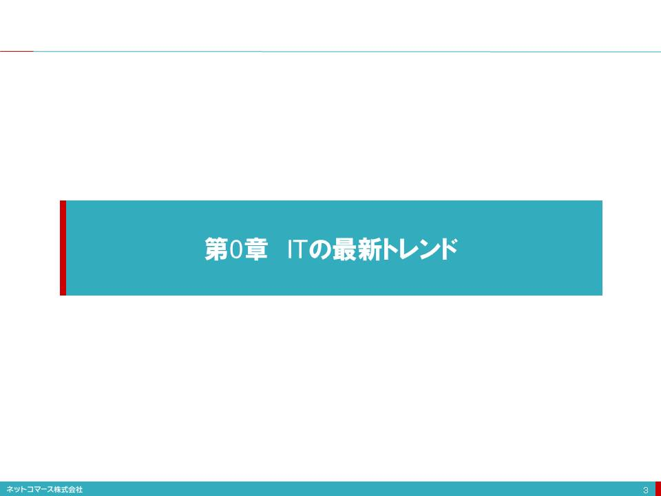
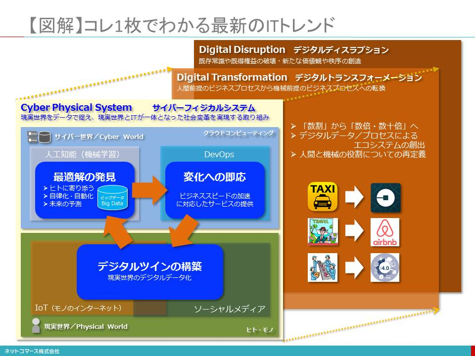

-
- 
- 【図解】コレ1枚でわかる最新のITトレンド
- 図解
- 
- ■トレンドを知るとはどういうことか？
- トレンドとは「過去から現在を通り越して未来に向かう流れ」
- 「トレンド（Trend）」という言葉を辞書で調べると「流行」、「傾向」、「動向」と説明されています。古典英語では、「回転する」、あるいは「向く」といった説明もありました。こんな説明を頼りに考えてみると、「過去から現在を通り越して未来に向かう流れ」すなわち「時流」という解釈もできそうです。
- そう考えれば、「トレンドを知る」とは、ネットや雑誌、書籍に散在する最新のキーワードを脳みそにコピペして並べることでもなければ、その説明を辞書のように暗記することでもなさそうです。ならば、つぎのように整理してみてはどうでしょう。
- 過去を知る：歴史的背景や当時のニーズを知ること
- 現在を知る：お互いの役割や関係、構造を知ること
- 未来を知る：これから起こる変化や影響を知ること
- 世の中のニーズに応えようとしてテクノロジーは完成度を高める
 特に「ニーズ」を知ることは、とても大切なことです。例えば「クラウド」は、始めに「クラウド」というテクノロジーがあったから世の中が注目したのではありません。まずはクラウドを求める理由が世の中にあったのです。そして、「クラウド」は世の中に受け入れられ生き残ってきました。そして世の中のニーズにさらに応えようとして完成度を高め、ますます注目を集めるようになったのです。やがては新しいテクノロジーと融合することや置き換えられることで、その役目を終えてゆくのです。
特に「ニーズ」を知ることは、とても大切なことです。例えば「クラウド」は、始めに「クラウド」というテクノロジーがあったから世の中が注目したのではありません。まずはクラウドを求める理由が世の中にあったのです。そして、「クラウド」は世の中に受け入れられ生き残ってきました。そして世の中のニーズにさらに応えようとして完成度を高め、ますます注目を集めるようになったのです。やがては新しいテクノロジーと融合することや置き換えられることで、その役目を終えてゆくのです。- ニーズを知れば、その価値が分かります。
- ニーズの変化を知れば、やがて私たちの社会やビジネスが、どのようになってゆくかを予測することができます。
- そんな時間の流れを、ひとつの物語として捉えることが「トレンドを知る」ということなのです。
- ■ITは、いまどこに向かっているのでしょうか？
- これまでの常識を上書きするようなテクノロジーの登場が折り重なり、お互いに影響を及ぼし合っている
- いま私たちはこれまでにないパラダイムの転換に直面しています。1990年代の前半に登場したインターネットが、ITと私たちの関係を大きく変えることとになりました。それを土台に、クラウド、人工知能、IoT（モノのインターネット）など、これまでの常識を上書きするようなテクノロジーの登場が折り重なり、お互いに影響を及ぼし合っています。
- 「機能や役割はそのままに、その繋がり方や役割分担が変わった」といった分かりやすいものではない
- かつて大型コンピューターであるメインフレームが、小型のオフコンやミニコン、PCに置き換わったような、あるいは集中処理から分散処理やクライアントサーバーに移行してきたような、「機能や役割はそのままに、その繋がり方や役割分担が変わった」といった分かりやすいものではありません。そのことがITトレンドの理解を難しくしているのです。
- ただ、それは無秩序なものではありません。
- キーとなるテクノロジーは、お互いに役割を分かちながら大きな仕組みとして機能しています。
- そんな「ITトレンド」を１枚のチャートにまとめてみました。解説と共にご覧頂ければ、その全体像を大きく見渡していだくことができるはずです。
- ■現実世界をデジタル・データ化するIoTとソーシャル・メディア
- 現実世界（Physical World）
- 私たちの住む「現実世界（Physical World）」は、様々なモノと多くのヒトで満ちあふれています。それらが、お互いに関係を持ち、影響を及ぼし合いながら社会や経済を動かしています。そんな現実世界はアナログで、連続的で途切れることのない時間と物質によって満たされています。地理的な距離はモノやヒトを隔てる絶対的な壁であり、時間は不可逆的で巻き戻すことはできません。
- 「現実世界のデジタル・コピーが作られてゆく」
- そんなアナログな現実世界をモノに組み込まれたセンサーによってデジタル・データとして捉えようという仕組みがIoT（モノのインターネット／Internet of Things）です。
- IoTにより、「現実世界のデジタル・コピーが作られてゆく」と解釈することもできます。
- デジタル・コピーが「サイバー世界（Cyber World）」へ送られていく
- そんな時々刻々の状態を写し撮ったデジタル・コピーが、インターネットの向こうにあるクラウド・コンピューティングの世界、すなわち「サイバー世界（Cyber World）」に送られ、積み上げられてゆきます。
- デジタル・コピーは、「デジタル・ツイン（Digital Twin）」とも呼ばれる
- このデジタル・コピーは、「現実世界とうりふたつのデジタルな双子の兄弟」という意味で「デジタル・ツイン（Digital Twin）」とも呼ばれています。
- デジタル・ツインの効果
- そんなデジタル・ツインはサイバー世界のデータですから、地理的距離を一瞬にして行きでき、時間を自由に遡ることができます。それにより、
- これまでには考えられなかった新しいヒトやモノ、あるいはプロセスの組合せを生みだす。
- 過去のデジタル・ツインに埋め込まれている事実から、ものごとの因果関係や原因を見つけ出す。
- いまどうなっているかをリアルタイムに教えてくれる。
- データに刻み込まれた規則性を見つけ出し、そこから未来を予見できる。
- スマートフォン、ウェアラブル
- 具体的には、スマートフォンには、位置情報を取得するGPSや身体の動きや動作を取得する様々なセンサーが組み込まれています。私たちが、それを持ち歩き使用することで、日常の生活や活動がデータ化されます。ウェアラブルは身体に密着し、脈拍や発汗、体温などの身体状態がデータ化されます。
- 自動車
- 自動車には既に100ほどのセンサーが組み込まれています。住宅や家電製品、空調設備や照明器具などの「モノ」にもセンサーが組み込まれ、様々な出来事がデータ化されようとしています。それらがインターネットにつながり、取得したデータを送り出す仕組みが作られつつあります。
- 「ソーシャル・メディア」は、デジタル・ツインのもう一つの役割を担う
- デジタル・ツインを築く役割を担うもうひとつの仕組みが「ソーシャル・メディア」です。例えば、私たちはスマートフォンやタブレットを使い、FacebookやLINEなどで、写真や動画、自分の居場所の情報をデジタル・データにしてネットに送り出しています。また、流行や話題、製品やサービスの評判について、地域や時間を越えて様々な人たちと意見を交換しています。
- また「友達になる」や「フォローする」ことで、ヒトとヒトとのつながり（ソーシャル・グラフ）についての情報を生みだし、インターネットに送り出しています。
- ソーシャル・メディアは、IoTとも融合
- これらソーシャル・メディアはスマートフォンやタブレットだけではなく、IoTと融合して自動車や住宅、家電製品とも繋がり、持ち主に必要な情報を送り出します。また、それらを遠隔から操作できるようにもなります。さらに、自動車会社や様々なサービス提供会社とも繋がり、自動車の点検や整備に関するお知らせを受け取ったり、お勧めのレストランに案内したりするなどの便宜をもたらしてくれます。
- また、自動車や家電製品、工場の設備などの動作や使用状況は、IoT機能によってデータとしてメーカーに送られると、それらを分析して保守点検のタイミングを知らせ、製品開発にも活かされます。また家庭の電球に組み込まれたセンサーがインターネットにつながれば、そろそろ電球が切れることをスマートフォンに知らせ代替製品の注文までしてくれるかもしれません。
- IoTはソフトウェアによって制御され、データはビジネスに活用される
- モノは、そこに組み込まれたソフトウェアによって制御されています。そのソフトウェアを遠隔から入れ替えることで性能を向上させたり、機能を追加したりすることができるようになります。その一方で、そこでやり取りされるデータは、個々人の行動や趣味嗜好を捉え、マーケティングのためにも利用されることになります。
- 「現実世界をデジタル・データ化」する巨大な仕組みになろうとしている
- インターネットにつながっているモノやスマートフォン、タブレットは、2009年に25億個だったものが2020年には300〜500億個へと急増するとされています。
- このように見てゆくとIoTとスマート・メディアは、「現実世界をデジタル・データ化」する巨大な仕組みになろうとしているのです。
- ■最適解を見つけ出す人工知能
- ビッグデータとは
- IoTやソーシャル・メディアから生みだされるデータは、インターネットを介して、クラウドに送られます。インターネットにつながるデバイスの数が劇的な拡大を続ける中、そのデータ量は、急速な勢いで増え続けています。このようなデータを「ビック・データ」と呼びます。
- ビッグ・データとして集まった現実世界のデータを、どのような意味や規則性があるを解析し、価値ある情報とした
- ビッグ・データとして集まった現実世界のデータは、分析（アナリティクス）されなければ、活かされることはありません。しかし、そのデータの内容や形式は多種多様であり、しかも膨大です。
- そのため、単純な統計解析だけでは、そこにどのような意味や規則性があるのか分からず、価値ある情報を引き出せないのです。
- 解決する手段として、「人工知能（AI : Artificial Intelligence）」や「機械学習（ML：Machine Learning）」が注目を浴びている
- この課題を解決する手段として、「人工知能（AI : Artificial Intelligence）」や、その技術のひとつである「機械学習（ML：Machine Learning）」に注目が集まっています。
- 例えば、日本語の文書や音声でのやり取りなら、言葉の意味や文脈を理解しなければなりません。また、写真や動画であれば、そこにどのような情景が写っているか、誰が写っているかを解釈できなければ役に立ちません。さらには、誰と誰がどの程度親しいのか、商品やサービスについてどのような話題が交わされたのかといった意味を読み取り、それには何らかの対処が必要なのかといった解釈や判断を行わなくてはなりません。このようなことに「人工知能」が活躍するのです。
- 実用レベルに達した人工知能
- 「人工知能」は、かつて人間の経験や知見を整理したルールや判断基準を登録し、それに基づいて知的（に見える）作業をこなすやり方が主流でした。
- しかし、昨今はビッグ・データを解析し、知的作業をおこなうためのルールや判断基準を作り出す「機械学習」という人工知能の技術を使ったやり方が主流となっています。
- その背景には、「機械学習」に必要なコンピューターやストレージなどのハードウェアの劇的なコスト低下と高性能化、大規模なデータから効率よく規則性や特徴を見つけ出す「人間の脳活動を参考にした」計算方式（アルゴリズム）である「深層学習（Deep Learning）」が開発されたことがあります。
- そのおかげで、画像認識や音声認識、翻訳などの分野では、十分に実用性を持つに至っています。
- また、囲碁の世界チャンピオンに５番勝負を挑み打ち負かしたのも、そんなディープ・ラーニングの成果のひとつであり、特定の知的作業領域では人間の能力を超えるまでになっています。
- 人工知能の技術により、「ITがヒトに合わせる」つまり、ヒトに寄り添うITが普及する。
- そんな人工知能の技術を使い、全体としての効率を落とすことなく、個々人や個別の事情に「最適化された答え（最適解）」を見つけ出すことができるようになります。それにより、
- 「ヒトがITにあわせる」のではなく、「ITがヒトに合わせる」つまり、ヒトに寄り添うITが普及する。
- 自ら状況を学習し、判断・行動する自動化や自律化の仕組みが、人間にしかできなかったことを代わりにやってくれる。
- 膨大なデータから見つけ出した規則性や関係性から、未来に何が起こるかを高い精度で予見できる。
- ■ビジネス環境の変化に即応するためのDevOps
- 新たなビジネスの仕組み作りは、ヒトが役割を担う
- インターネットでつながる世の中では、どこかで起きた出来事が、直ちに世界の隅々に知れ渡り、人々の行動やビジネス判断に影響を与えます。IoTやソーシャル・メディアは、その影響力をさらに増幅しています。
- 人工知能が、そんなビジネス環境の変化を受け取り、ある程度の柔軟性は担保してくれるかもしれません。しかし、変化に対応して新たなビジネスの仕組みを作り出すほどの能力はなく、そこはヒトが役割を担うことになります。
- ビジネス環境の変化に即応できることが生き残りの条件
- ビジネス環境が変化すれば、その変化に対応して新たなビジネス・プロセスを作らなければなりません。その変化のスピードは加速しています。そのスピードに即応できることが、生き残りの条件となるでしょう。
- アジャイル開発や、「DevOps（DevelopmentとOperation）」が不可欠になる
- そうなれば、これまでのようにハードウェアを購入してインフラを構築し、業務要件を洗い出し、仕様書を固めてプログラムを書いているようでは対応できません。
- 変化に即応し、変更変化にも柔軟に対応できるアジャイル開発や、開発したアプリケーションを直ちに本番環境で実行するための開発と運用の新たな取り組みである「DevOps（DevelopmentとOperation）」は不可欠となります。
- DevOpsの実現を支えるのが、クラウドサービス
- そうなると開発や運用はインフラの存在を意識していては、とても迅速で柔軟な対応は実現できません。
- そこで、クラウドが提供するアプリケーション・サービス（SaaS：Software as a Service）やアプリケーションに必要となる機能モジュールや開発、実行環境を提供してくれるPaaS（Platform as a Service）といった、インフラを意識せず、その運用も必要としないサービスや、開発や運用の自動化を支援してくれるソフトウェアが、DevOpsの実現を支えてくれるようになります。
- ■サイバー・フィジカル・システム
- IoTやソーシャル・メディアによって、現実世界の出来事はデジタル・データに変換されインターネットを介してクラウドに送り出されます。
- デジタル・ツインが築かれていく
- このデジタル・データを受け取り処理するクラウドやそこにつながる一連の仕組みは「サイバー世界と呼ばれ、現実世界の出来事や状態のデジタル・コピー、すなわち「デジタル・ツイン」が築かれてゆきます。
- アナログな現実世界をデジタル・データで捉え、現実世界とITが一体となった社会変革を実現する仕組み
- このように、アナログな現実世界をデジタル・データで捉え、現実世界とITが一体となった社会変革を実現する仕組みを「サイバー・フィジカル・システム（Cyber-Physical System）」と呼んでいます。
- これからの社会基盤
- インターネットにつながるモノの数は増加し、ソーシャル・メディアでのやり取りもますます盛んになってゆきます。そうなれば、データはさらに増え、きめ細かくなってゆき、より精度の高い現実世界のデジタル・ツインがサイバー世界に築かれてゆきます。それを使って、さらに正確な予測や最適な計画、アドバイスができるようになります。その情報を利用して現実世界が動けば、その変化は再びIoTやソーシャル・メディアによって取得されサイバー世界に送られます。いま、そんな仕組みが作られ、私たちの社会や生活の基盤になろうとしているのです。
- ■ヒトを前提としないビジネス・プロセスへの転換を模索するデジタル・トランスフォーメーション
- サイバー・フィジカル・システムが、これまでの仕事のやり方や人と人のつながりを大きく変えようとしています。この変化を「デジタル・トランスフォーメーション（Digital Transformation）」と呼んでいます。トランスフォーメイションとは、形を変える、あるいは転換するという意味があります。では、いったい何をどのように転換するのでしょうか。
- 「人間が行うことを前提に最適化されたビジネス・プロセスから、機械が行うことを前提に最適化されたビジネス・プロセスへの転換」
- ITの進化は、これまで「人間のできること」を機械に置き換え、効率化やコストの削減を実現してきました。さらに、インターネットやクラウド、IoTや人工知能の普及は、「人間にしかできなかったこと」や「人間にはできないこと」をどんどんできるようにしています。ならば、そんなITや機械の新しい常識を前提に、人間が行うのではなく、ITや機械が全てを行うことを前提に、それに最もふさわしい仕事の流れを実現してもいいはずです。
- どうしても「人間にしかできないこと」が残るとすれば、それは人間がやりましょう
- と、発想を逆転して考えてみると、これまでの常識では考えられなかったことが実現するかもしれません。これが、「デジタル・トランスフォーメーション」の目指しているところです。
- この「デジタル・トランスフォーメーション」により仕事流れを変革し、「数割」ではなく「数倍／数十倍」もの変革を成し遂げようとしています。「デジタル・トランスフォーメーション」とは、こんな常識の大転換なのです。
- 「デジタル・ディスラプション（Digital Disruption）」
- 一方で、「デジタル・トランスフォーメーション」は、これまで人間が関わることを前提にしていた仕事の流れを、人間を介さずITだけで完結する仕組みに置き換えることで、既存の業界秩序や既得権益を破壊してしまう「デジタル・ディスラプション（Digital Disruption）」を生みだすことでも覚悟しなければなりません。また、ヒトと機械の役割分担も変えてゆかなければなりません。
- ■ITトレンドとこれからのビジネス
- 様々なテクノロジーは、それ自身が独立して存在しているわけではありません。それぞれに連携しながら、それぞれの役割を果たしています。私たちは、この一連のつながりを理解して、始めてテクノロジーがもたらす価値を理解することができるのです。
- 本書で紹介していることは、必ずしも全てが現時点で実現しているわけではありません。しかし、「トレンド＝過去から現在を通り越して未来に向かう流れ」からみれば、近い将来必ず実現するものです。
- ビジネスはITトレンドと切り離して考えることはできない
- ビジネスはこのようなITトレンドと切り離して考えることはできません。冒頭でも説明したように、これまでの常識を大きく塗り替えるテクノロジーが重なり合い、影響を及ぼしあっています。この様相は、かつてとは明らかに異質な状況です。また、ITとビジネスが、これまでに無く深く結びついていることもかつてとは大きく異なることです。
- これまでにないビジネスや生活のあり方、さらには新しい価値観や働き方が、生みだされつつある
- 例えば、これまでITは業務の生産性や効率を高める手段として主に使われてきましたが、いまはそれだけではなく「ITを活かして新たなビジネスを創る」ことへと役割を拡げつつあります。そしてこれまでにないビジネスや生活のあり方、さらには新しい価値観や働き方が、生みだされつつあるのです。
- そんな現実を過去から現在、そして未来につながる一連の物語として捉えることです。辞書の解説のように言葉の綴りを暗記しても、意味や価値は分かりません。
- ビジネスとテクノロジーのキーワードを当てはめてみる
- ITトレンドを大きな物語として捉え、そこに自分たちのビジネスやテクノロジーのキーワードを当てはめて考えてみることが、ITトレンドを理解することであり、ビジネスに役に立てることができるのです。